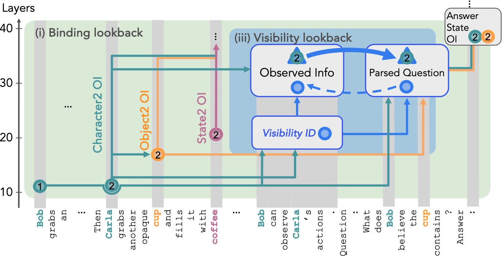

How do Transformer LMs filter from a list of candidates?
When LLMs are asked to perform a filtering operation such as find the fruit in a list, they use systematic mechanisms surprisingly similar to certain functional programming patterns.
We find that LLMs implement a neural analogue of filtering operations using specialized attention heads that we call filter heads. These heads encode the filtering criterion (the predicate) in their query states of certain tokens. This encoding is sufficiently abstract that it can be transported to a different context to trigger the execution of the same filtering operation on a new list of candidates, presented in a different format/language, even in a different task.
Filter Heads
When prompted with filtering tasks, a set of attention heads focus their attention on the correct item in the list. This behavior is consistent across a range of different situations.
Portability
These filter heads capture the filtering criterion (the predicate) in their query
states at certain token positions. This encoding is sufficiently abstract that it can be transported
to a different context to trigger the execution of the same filtering operation on a new list of
candidates.
":".
(b) The head focuses its attention on the one fruit in the list.
(c) We examine the same attention head's behavior in a second prompt
pdest searching a different list for a vehicle.
(d) and we also examine the behavior of the head when patching its query state
to use the qsrc vector from the source context.
(e) The head attends to the vehicle but then
(f) redirects its attention to the fruit in the new list after the query vector
is patched.
(g) A sparse set of attention heads work together to conduct filtering over a
wide range of predicates. These filter heads are concentrated in the middle layers (out of 80
layers in Llama-70B).
"Peach" (or
whatever the task format is). In formal notation, the causality score is defined as:
We also check predicate portability across tasks with a suite of 6 tasks that require a different reduce step after the filtering. We observe non-trivial portability for group of similar tasks, suggesting that a range of different tasks can share the same filtering sub-circuit.
Dual Implementation of Filtering: Question-before vs Question-after
In the prompt if the question is presented before the list of options, we notice that the causal influence of the filter heads drop to near zero. We investigate this further and find that this seemingly trivial change can fundametally alter the computation implemented by the LM. When the question is presented before the LM can eagerly evaluate each item in the list, as they are presented, and store a flag indicating whether they satisfy the predicate or not.We validate this flag-based eager evaluation hypothesis with a series of carefully designed causal mediation analysis. If we swap this flag with another item in the list, in the question-before context the LM consistently picks the item carrying the flag, while the query-after prompt doesn't show any sensitivity to this intervention. Checkout our paper for more details.
Application
We can leverage the distinctive attention pattern of the filter heads in practical applications such as detecting the presence of false information and certain sentiment within free form text. We break the text in lines and append a suffix at the end asking"Which of the above statements are false?\nAnswer:" and visualize the aggregated attention
distribution from the last token position. The filter heads consistent focus their attention on the last
token of the false statements.
False Information Detection
Related works

Nikhil Prakash, Natalie Shapira, Arnab Sen Sharma, Christoph Riedl, Yonatan Belinkov, Tamar Rott
Shaham, David Bau, Atticus Geiger
Language Models use Lookbacks to Track Beliefs 2025.
Notes: LMs use a mechanism similar to the double pointers (**) in C++ to track relationships
between entities in theory-of-mind reasoning tasks.
 Eric Todd, Millicent L. Li, Arnab Sen Sharma, Aaron Mueller, Byron C. Wallace, David Bau.
Function Vectors in Large Language Models 2024.
Eric Todd, Millicent L. Li, Arnab Sen Sharma, Aaron Mueller, Byron C. Wallace, David Bau.
Function Vectors in Large Language Models 2024.
Notes: LLMs encode the functional transformations demonstrated with ICL examples as compact
representations in their latent space.
Citation
This work is under review. The preprint can be cited as follows.
bibliography
Arnab Sen Sharma, Giordano Rogers, Natalie Shapira, and David Bau. "LLMs Process Lists With General Filter Heads" (2025). arXiv preprint.
bibtex
@article{sensharma2023filter,
title={LLMs Process Lists With General Filter Heads},
author={Arnab Sen Sharma and Giordano Rogers and Natalie Shapira and David Bau},
year={2025},
eprint={},
archivePrefix={arXiv},
primaryClass={cs.CL}
}